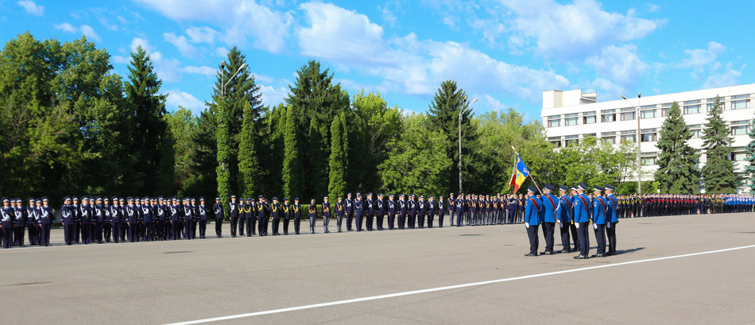

1991 - PREZENT ACADEMIA DE POLITIE „ALEXANDRU IOAN CUZA"
Prin Hotărârea Guvernului României nr. 137 din 25 februarie 1991 se înfiinţează Academia de Poliţie „Alexandru Ioan Cuza", instituţie militară de învăţământ superior cu autonomie universitară, subordonată ministrului de interne, în cadrul Academiei de Poliţie „Alexandru Ioan Cuza" se înfiinţează:
- Facultatea de Poliţie, echivalentă cu studii juridice superioare;
- Facultatea de Psihosociologie;
- Facultatea de Pompieri, echivalentă cu studii superioare în domeniul tehnic, profilul construcţii (art.3);
- Prin Ordinul Ministrului de Interne nr. 1/ 05970 din 15 decembrie 1991, în cadrul Academiei de Poliţie „Alexandru Ioan Cuza" se înfiinţează Facultatea de Jandarmi, echivalentă cu studii juridice superioare (art.1);
- Prin Ordinul Ministrului de Interne nr. 04817 din 01 februarie 1992, în cadrul Academiei de Poliţie „Alexandru Ioan Cuza" se înfiinţează Facultatea de Arhivistică, care face parte din structura acestei instituţii de învăţământ superior (art. 1)
- Prin Ordinul Ministrului de Interne nr. 04874 din 31 iulie 1992, în cadrul Academiei de Poliţie „Alexandru Ioan Cuza" se înfiinţează Facultatea de Grăniceri, echivalentă cu studii juridice superioare (art.1);